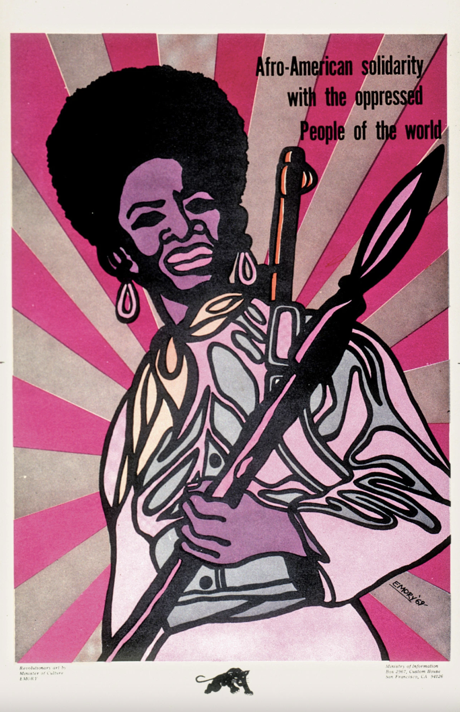

- 


Emory Douglas (born May 24, 1943) is an American graphic artist. He was a member of the Black Panther Party from 1967 until the Party disbanded in the 1980s. As a revolutionary artist and the Minister of Culture for the Black Panther Party, Douglas created iconography to represent black-American oppression.